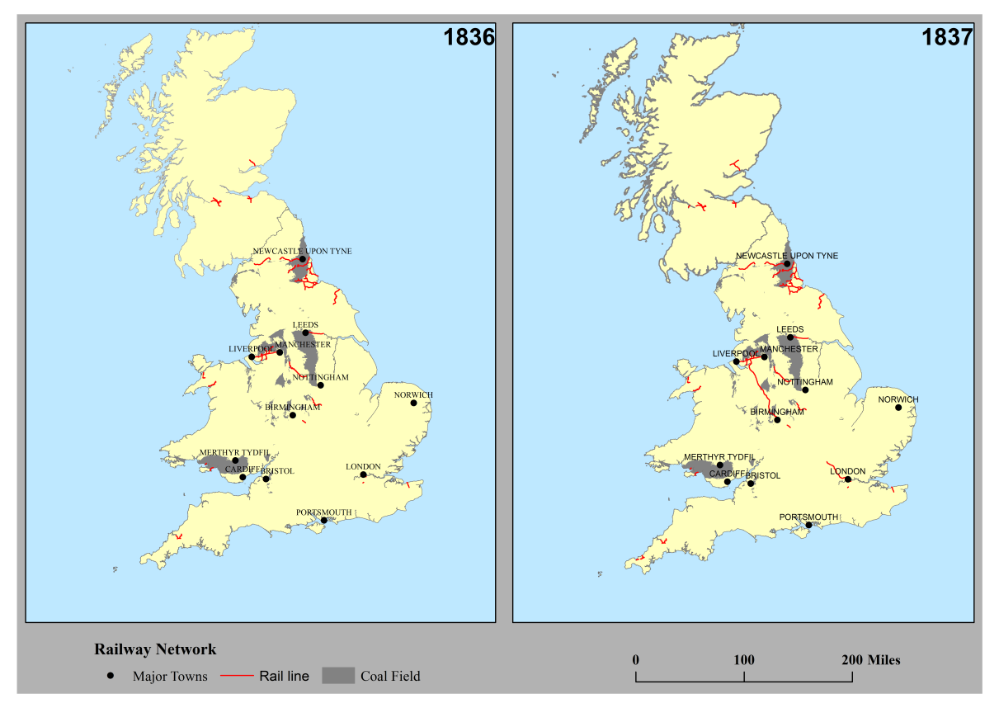

How is this connected and impacting us from nowadays transportation to the Industrial Revolution
The Industrial Revolution has invested the railway system which is still widely using now. Railway is one of the major things that Industrial Revolution brings to our society. If there’s no Industrial Revolution, there will be no railway system. You can travel from Beijing to Shanghai using railway within 4 hours. But if there’s no Industrial Revolution, that would take more than one month. Which shows how Industrial Revolution benefits our transportation. This is the best transportation I would choose for now. It’s quiet, stably, and cheap. The transport invested during the Industrial Revolution also benefits people in other ways, for example the goods you buys. Even if you are not shopping online, the goods still has to been transported to the stores. Which makes people get the newest product easily. This is a benefits that most people wouldn't think of, but very important.
Invention of electric powertrain
In Europe, electric powertrains were wisely used starting 1960s. They are queit and require less-cost maintaining. There are locomotive and multiple unit trains just as diesel powertrain. As the time changing, economy is getting more important than industry. So, the railway transportation is more on transporting passengers instead of taking goods. Modern railway operator choose electric powertrain for the railway. Which makes passengers feel more comfortable by the advantage of electric powertrain.
Different from diesel and steam engine's internal energy storage, electric powertrain get the energy outside the train at everytime. They use thrid rail or overhead line, which allows the train get the electric when it is functioning.
Invention of diesel locomotive
In the late 1890s, people invented the diesel locomotive. It was more efficient and powerful than the old steam locomotive. Which is widely used for transporting goods. After the World War II, diesel locomotive were used extensively.
Early Railway System
The first type of power for the train is steam power. It was used to transport goods and people faster. At the beginning of the Industrial Revolution, people discovered that overseas transport is faster than inner mainland transport, but building a cannal inside the inner mainland is too expensive. The transport method inside mainland was not efficient, so they were thinking for a new transport method.
By the time of 1821, the first steam powered railway system, Stockton and Darlington Railway, has started it's operation.
The seal of the Stockton and Darlington Railway, as well as the planned route of Stockton and Darlington Railway
Public Domain
Bibliography:
World Histroy Encyclopedia
Britannica
How the growth of transportation is relevant to the Industrial Revolution?
Industrial Revolution is a significant movement of human’s society. The Industrial Revolution impacted the growth of transportations. And that is one of the major technology which the Industrial Revolution bring us.
In nowadays, transportations are mostly serving people. But back in the beginning of the Industrial Revolution, railways and cannals were mostly used for transporting materials to produce goods.

As you can see, when the railways barely started to develop, it was built along the coal field. But later on, it started to build outside the coal field.
Class Material:
https://www.campop.geog.cam.ac.uk/research/projects/transport/onlineatlas/railways.pdf
.jpg)